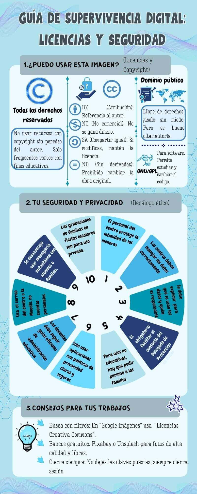

¡Proteged vuestro legado digital!
Puede pareceros extraño dedicar tiempo a explicar cómo trabajar en la red cuando la mayoría vivís conectados a ella. Sin embargo, en el mundo de la investigación literaria, no todo lo que brilla en la pantalla es oro. Al igual que los autores protegían sus manuscritos, nosotros debemos aprender a navegar con seguridad y ética.
En este proyecto, aprenderemos dos elementos básicos para ser ciudadanos digitales responsables:
- Privacidad y Protección de Datos: Al utilizar herramientas como Genially, Padlet o Vocaroo, debemos ser cautos con la información personal que compartimos. Tras la pantalla, vuestra identidad es vuestro bien más valioso; aprended a protegerla.
- Rigor y Ética Intelectual: En la era de las fake news y el "copia-pega", seleccionar fuentes fiables es un superpoder. No todas las webs literarias tienen el mismo valor. Por eso, aprenderemos a citar correctamente y a usar licencias Creative Commons, respetando el trabajo de los demás para que el nuestro también sea respetado.
Recordad que las fuentes seguras y el material de apoyo están centralizados en nuestro Padlet. Yo estaré supervisando vuestra navegación en todo momento para resolver cualquier duda.
Aquí os dejo una guía visual con los consejos esenciales para gestionar vuestras licencias y seguridad durante el proyecto: INFOGRAFÍA

Elaboración propia CC BY-SA 4.0